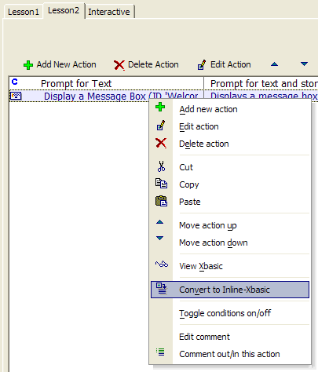

Converting an Action to Inline Xbasic
We saw earlier how you can view the Xbasic code associated with any Action. Alpha Five also allows you to convert an Action into Xbasic code.
Open the Lesson2 script in the Code Editor.
Select the second Action, "Display a Message Box".
Right-click and select Convert to Inline-Xbasic.

Before converting to Inline-Xbasic, Alpha Five displays a warning dialog box. Once you convert an action into Xbasic, you can no longer use the Genie to edit the action. Instead, you have to use the Xbasic Code Editor.
Click Yes.
The "Display a Message Box Action" is now converted into a new type of Action called Inline Xbasic.
 Note : The action is
called "Inline Xbasic" because this action type allows you to
insert Xbasic within an Action Script.
Note : The action is
called "Inline Xbasic" because this action type allows you to
insert Xbasic within an Action Script.
Click the Edit Action button to edit the Inline Xbasic Action to see how it looks. The Script Genie: Inline Xbasic dialog appears. Note that the Display a Message Box Genie no longer appears when we edit this action. In some cases, you might find editing the message box in its Xbasic form to be quicker and easier than in the Genie.
For example, you might want to change the title on the message box. Looking at the Xbasic code in the Genie, you can see that the title for the message box is based on the variable title_var, which is set to "Welcome". Change the title to "Hello".
Change title_var = "Welcome" to title_var = "Hello".
Click Next > and Finish to complete editing the action.
Click the Run button to test your changes.